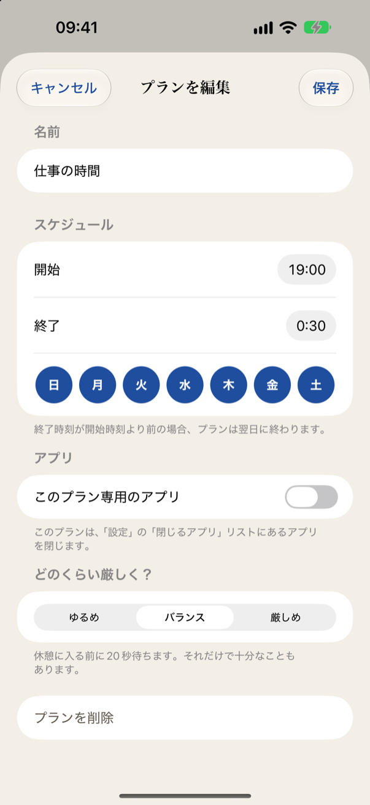
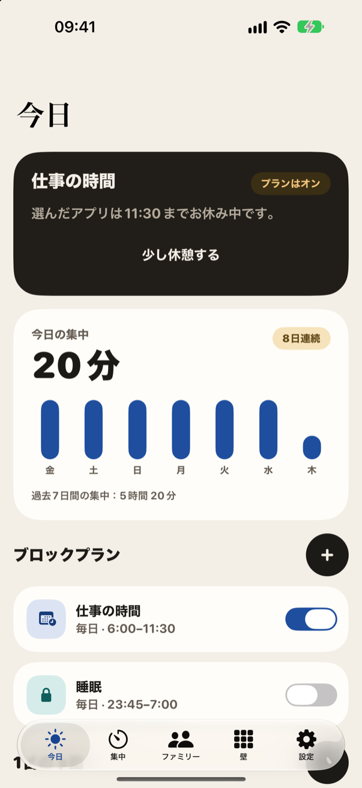
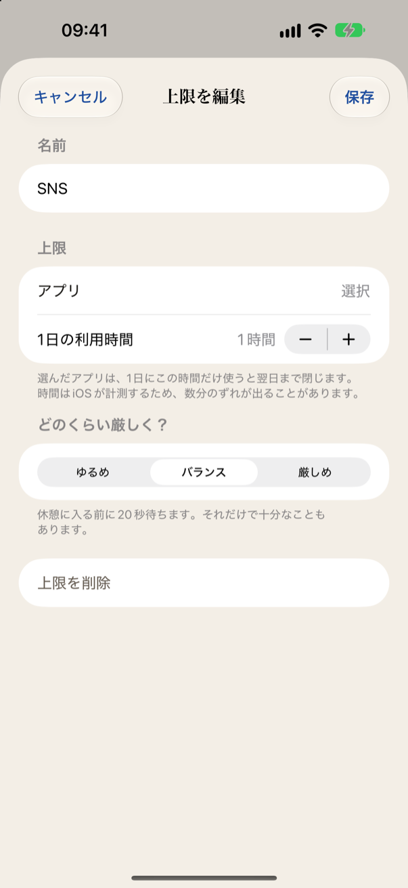
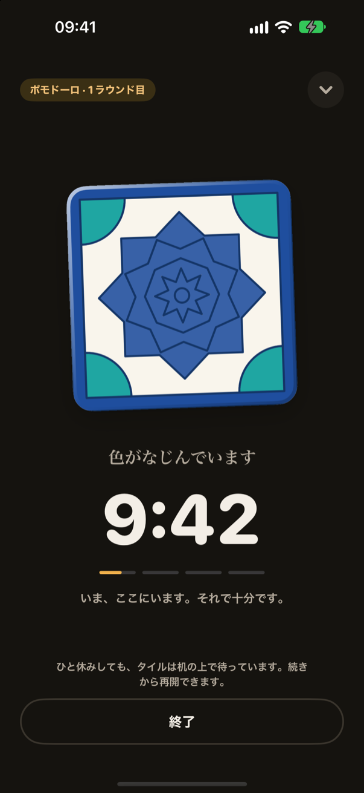
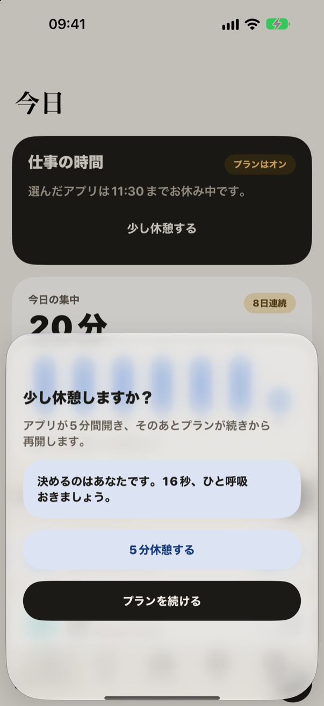
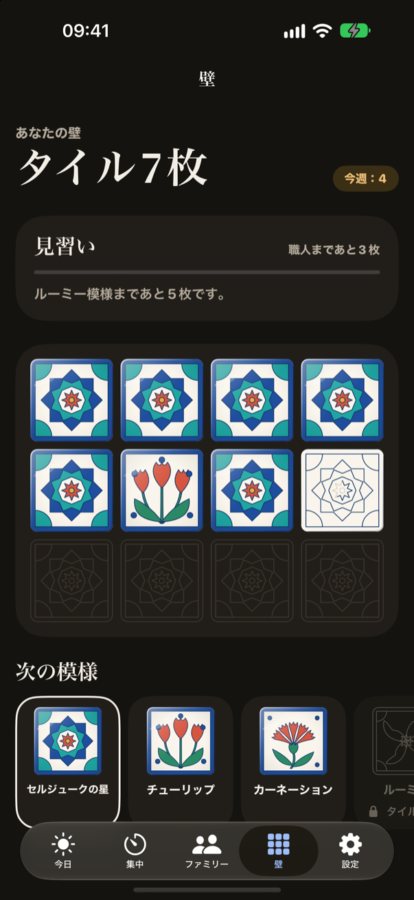
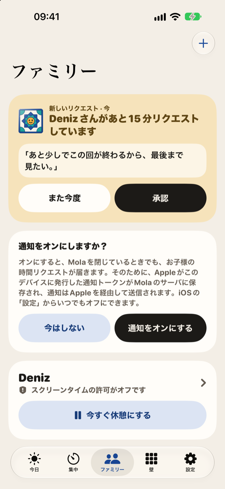
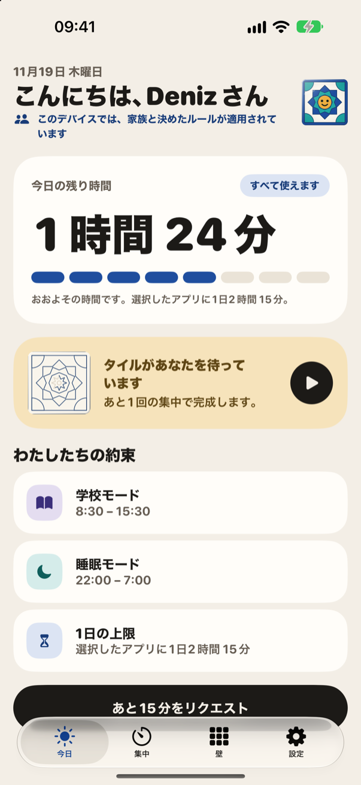

ブロックプラン
時間を決めれば、あとはおまかせ
プランが始まると選んだアプリが閉じ、終わるとまた開きます。平日用、週末用、好きな曜日用と、プランは分けて作れます。
- 仕事、勉強、睡眠の時間ごとに別々のプラン
- 日付をまたぐプランにも対応
- ワンタップでプランをオン／オフ

アプリブロックと集中 · iPhone、iPad、Apple Watch
Molaは、選んだアプリを、決めた時間帯に、または1日の利用時間を使い切ったときにブロックします。集中セッションのたびに、タイルが1枚色づきます。登録は不要で、使用状況のデータはあなたのiPhoneに残ります。
iOS 18以降。広告もトラッキングもありません。

いちばん気が散るアプリ、カテゴリ、Webサイトを、Appleの選択画面で選びます。選んだ内容がデバイスの外に出ることはありません。
仕事、勉強、睡眠の時間に合わせてプランを作りましょう。プランの時間外でも、好きなときに集中セッションを始められます。
集中セッションのたびに、タイルが1枚色づきます。完成したタイルは壁に並び、途中のタイルは次のセッションで続きから再開します。
ブロックプラン
プランが始まると選んだアプリが閉じ、終わるとまた開きます。平日用、週末用、好きな曜日用と、プランは分けて作れます。

1日の上限
選んだアプリに1日の利用時間を決めます。時間を使い切るとそのアプリはブロックされ、ほかのアプリはそのまま使えます。

集中セッション
用意されたプログラムから選ぶか、集中時間、ラウンド数、休憩の長さを自分で決められます。お好みで、セッションのあいだ選んだアプリをブロックしたままにできます。

厳しさのレベル
「バランス」のプランで休憩したいときや、セッションを早めに終えたいとき、Molaはまず少しだけ待ってもらいます。それだけで十分なこともあります。ただし「厳しめ」のプランは、終わるまで変更できません。

タイルの壁
タイルには、まず輪郭線、次に色、最後に釉薬がのります。最初の模様はセルジュークの星。壁が広がるにつれて、チューリップ、カーネーション、ルーミー、チンテマーニ、ハターイ、組紐、ザクロの模様が加わり、見習いから親方へと進んでいきます。

Apple Watchで使える集中タイマー。Watchのアプリを開いているあいだ、セッションはiPhoneと同期し、同じタイルが色づきます。残り時間と時刻をひと目で確認できます。
ホーム画面からワンタップでセッションを始められ、残り時間もひと目でわかります。
レイアウトは画面の大きさに合わせて変わります。デバイスを折りたたんでも、表示していた場所はそのままです。
トルコ語と英語のほか、ドイツ語、フランス語、スペイン語、日本語、韓国語、アラビア語などに対応しています。
ファミリー
自分のためにMolaを使いながら、いつでもファミリーを設定できます。お子様のiPhoneの1日の利用時間、学校の時間、睡眠の時間は、お子様と一緒に決めます。お子様は、どのルールが、なぜ、いつまで有効なのかを自分の画面で確認できます。
1日の利用時間、学校モード、睡眠モード。隠れたルールはありません。
お子様は短い理由を添えて追加の時間をリクエストし、保護者はワンタップで返信します。
Molaが、メッセージ、写真、位置情報、使っているアプリを保護者に見せることはありません。
ファミリーのデバイス間のメッセージはデバイス上で暗号化されます。私たちのサーバは内容を読めません。
保護者が設定した休憩や新しいルールは、お子様のiPhoneでMolaを開いたときに適用されます。MolaはAppleのスクリーンタイムの仕組みで動作します。


プライバシー
Molaは、データを集めなくても動くように設計しました。ひとりで使う場合、私たちのサーバにあなたの記録は作られません。
iOS 18以降のiPhone、iPadOS 18以降のiPad、watchOS 11以降のApple Watchで使えます。
いいえ。登録、メールアドレス、パスワードは不要で、Molaを開けばすぐに使い始められます。ファミリー機能でもメールアドレスや電話番号は求めません。デバイスはQRコードでペアリングし、家族に表示される名前を書くだけです。
はい。「今日」タブで1日の上限を作り、アプリを選んで1日の利用時間を決めます。時間を使い切るとそのアプリはブロックされます。上限の厳しさによっては、5分の休憩をとれます。決まった時間帯にブロックしたい場合は、ブロックプランを使ってください。
プランの厳しさによっては、5分の休憩をとれます。「バランス」のプランでは休憩の前に20秒待ちます。「厳しめ」のプランでは、プランが終わるまで休憩はありません。「ゆるめ」と「バランス」のプランは、Molaでいつでもオフにできます。「厳しめ」のプランは、時間が終わるまでオフにできません。
いいえ。アプリはAppleのスクリーンタイムの選択画面で選びます。Molaは選んだアプリの名前さえ知らず、あなたのデバイスでだけ有効な暗号化されたトークンを保存するだけです。
保護者とお子様、両方のiPhoneにMolaをインストールするだけです。お子様がルールを解除できないように、お子様のApple Accountをファミリー共有でお子様として設定しておくことをおすすめします。
プラン、集中の履歴、タイルの壁はデバイスに保存されているため、アプリと一緒に削除されます。ファミリー機能を使ったことがある場合、サーバ上の記録を削除する方法は「データの削除」ページで説明しています。
スクリーンタイムの設定とMolaで、手順を追って。
アプリ使用時間の制限、休止時間、Molaの1日の上限。
25分のラウンドと休憩、そして作業中にスマホを遠ざける工夫。
MolaはまもなくApp Storeに登場します。